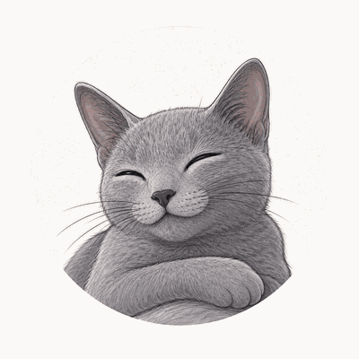
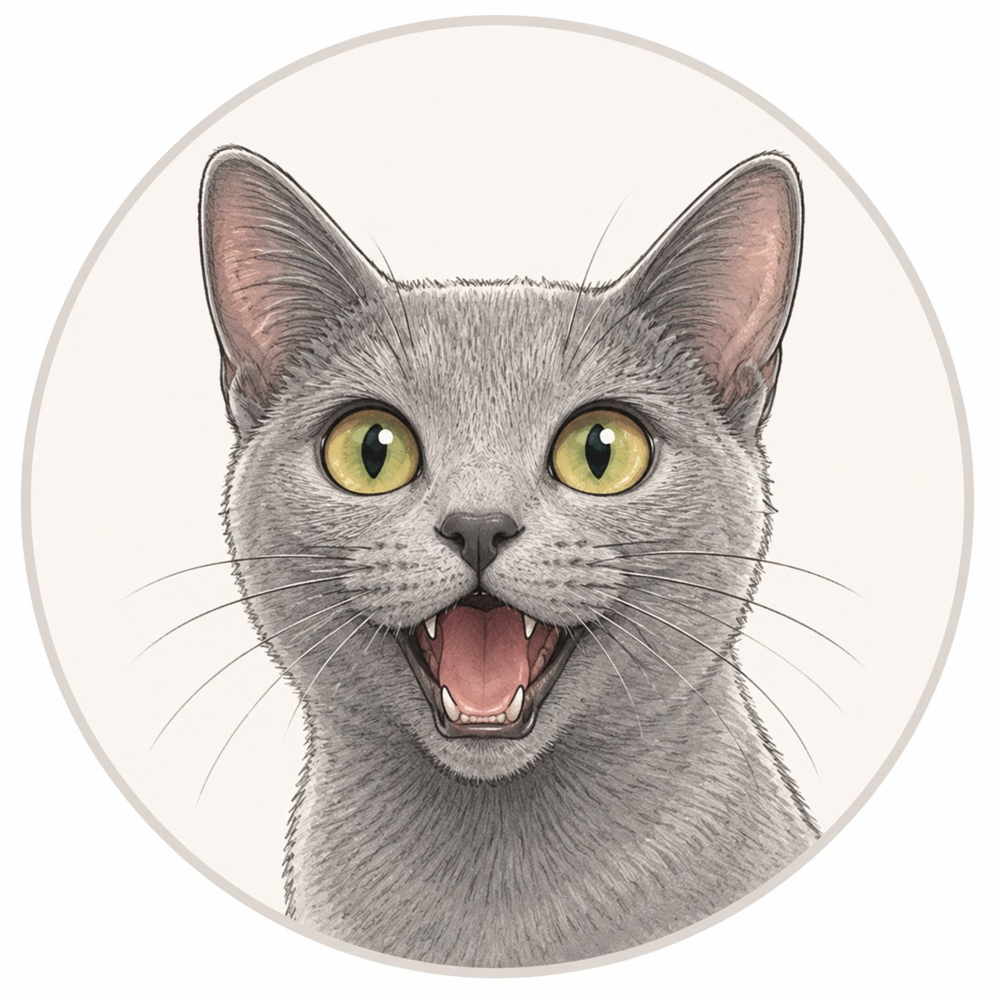

Kısa bir video dinle ve izle. (Listen and watch a short video.)

Video çok yakında burada olacak!Her gün tekrar eden işleri, alışkanlıkları, rutinleri ve genel gerçekleri anlatmak için Present Simple kullanırsın. Genç hayatında bu zamanı çok kullanacaksın:
Bu ünitede sadece I, you, we, they ile çalışıyoruz. Bu kişilerle fiil çoğu zaman olduğu gibi (sade) kalır:
I, you, we ya da they ile fiile hiçbir şey eklemezsin. Fiil hep sade (yalın) kalır:
| Kişi | Fiil | Örnek | Türkçesi |
|---|---|---|---|
| I | study | I study every evening. | Her akşam ders çalışırım. |
| you | play | You play football. | Futbol oynarsın. |
| we | chat | We chat online. | Online sohbet ederiz. |
| they | train | They train on Mondays. | Pazartesileri antrenman yaparlar. |
Bir şeyi yapmadığını söylemek için fiilden önce don't (do not) koyarsın. Fiil yine sade kalır:
| Olumlu | Olumsuz | Örnek | Türkçesi |
|---|---|---|---|
| I like | I don't like | I don't like horror films. | Korku filmi sevmem. |
| We study | We don't study | We don't study on Sundays. | Pazarları ders çalışmayız. |
| They use | They don't use | They don't use that app. | O uygulamayı kullanmazlar. |
Soru sormak için cümlenin başına Do koyarsın. Türkçedeki "mi / mısın" ekinin işini bu yapar:
Kısa cevaplar da kolaydır:
| Soru | Evet | Hayır |
|---|---|---|
| Do you play video games? | Yes, I do. | No, I don't. |
| Do they train every week? | Yes, they do. | No, they don't. |
| Do we have practice today? | Yes, we do. | No, we don't. |
Bu tabloyu kontrol listen yap. Kendi cümlelerini yazarken bu hataları yapma:
| Yanlış ✗ | Doğru ✓ | Neden? |
|---|---|---|
| I likes music. | I like music. | I ile fiil sade kalır, -s yok. |
| We plays online. | We play online. | we → play (sade). |
| I no use that app. | I don't use that app. | Olumsuz için "don't" kullan. |
| You follow me? | Do you follow me? | Soru: başa "Do" koy. |
| They don't studies. | They don't study. | don't'tan sonra fiil sade. |
İki genç okul rutinleri ve hobileri hakkında konuşuyor. Koyu yazılan kelimelere dikkat et ve iki kez oku:
Doğru cevabı seç. — 10 soru, her soru hemen kontrol edilir.
Talk about your routines, your friends, and your hobbies. Write 5 sentences. (Rutinlerin, arkadaşların ve hobilerin hakkında 5 cümle yaz.)
Cümle başlatıcıları (istersen bunlarla başla):
Okumadan önce şu kelimeleri hatırla — Speaking bölümünden tanıyorsun. Metinde bunları ara:
study · hang out · post · follow · chat · practise · train · watch · weekend · every day
Hi! I am Derin and I am fifteen. My friends and I go to the same school, and we study together in the evening. We don't like exams, but we help each other, so the week is easier.
My school is not far from my home. I get up at seven o'clock, and I have breakfast with my family. Then I walk to the bus stop with my friend Mila. We are in the same class, and we sit together. Our teachers are nice, and the lessons are fun.
I like English and art, but I don't like maths a lot. In the break, my friends and I eat a sandwich and we talk. We laugh a lot at school. After the last lesson, we say goodbye and we go home.
Mila is my best friend at school. She is funny and kind, and we sit next to each other. We share our lunch, and we help each other in class. After school, we walk home together, and we talk about our day. I am happy because we are good friends.
I live with my mum, my dad, and my brother. We eat dinner together every evening, and we talk about our day. My parents work a lot, but on weekends we cook and clean the house together. They are kind, and they help me with my homework when I need it. My brother and I don't argue much, and we share our games.
Our home is small but warm. My mum and dad are kind, and they cook great food. My brother is thirteen, and his name is Ali. In the evening, we play video games together. Sometimes we want different TV shows, but we are good friends.
On some weekends, my grandma and grandpa visit us. They are very kind, and they bring nice food. We sit in the kitchen, and we drink tea together. They love my stories about school, and they ask many questions. We are a happy family, and I love these calm days.
We have a small cat at home. Her name is Pamuk, and she is white and soft. My brother and I feed her every day, and we give her fresh water. At night, she is often on my bed. I love her a lot.
I like food a lot. For breakfast, I eat eggs and bread. At school, my friends and I buy fruit and water. In the evening, we all eat dinner together, and my favourite meal is pasta. On weekends, my mum and I make a cake, and we eat it with tea.
After school, we hang out in the park. My friend Kaan and I train for basketball twice a week, and we practise a lot because we want to win our next match. We don't stop when we are tired, and we always give our best.
I am not very tall, but I am fast. Kaan is my best friend on the team, and we play together. Our coach is kind, and we listen to him. We wear blue shirts in every match. When we win, we are so happy, and we eat pizza together.
In the evening, I chat with my classmates online. We follow the same teams, and we post short videos on weekends. I don't use social media a lot, but I check my messages every day. My friends and I also plan our weekend on a group chat.
I have many hobbies. I play the guitar, and I sing simple songs. My friends and I like the same music, and we share new songs online. On rainy days, we stay at home, and we watch films. I don't like horror films, but I love funny films.
My friends are really nice. On Saturdays we meet at the library, and we do our homework together. We don't play games all day. Do you have good friends like this? I am lucky because my friends and I like the same things. We watch films, we listen to music, and we laugh a lot.
On Saturday, I clean my room in the morning. Then my friends and I meet in the park or at the library. We ride our bikes, and we play basketball. In the afternoon, I do my homework, so I am free in the evening. I like my calm weekends.
I want to be a good student. English is important for me, and I practise every day. My friends and I help each other with new words. We read short stories in class, and we write simple sentences. Little by little, we get better every week. I am proud of my friends and my family.
I don't watch much TV. I like books and I read every night. My brother and I read comics too, and we talk about them. Today I am happy because we don't have homework tonight!
Are these sentences true or false? (Bu cümleler doğru mu yanlış mı?)
Choose the correct answer. (Doğru cevabı seç.)
Complete the sentences with a word from the text. (Cümleleri metindeki bir kelimeyle tamamla.)
Choose the correct answer. (Doğru cevabı seç.) — 18 soru, her soru hemen kontrol edilir.
İki fikri birbirine bağlamak için küçük bağlaçlar kullanırız. Cümlelerini bunlarla birleştir:
| Bağlaç | Anlamı | Örnek |
|---|---|---|
| and | ve | I study in the evening and I read every night. |
| but | ama | I like sports but I don't watch much TV. |
| because | çünkü | We practise a lot because we want to win. |
| so | bu yüzden | My friends live near me, so we hang out every day. |
Write about your week with your friends. (Arkadaşlarınla geçen haftan hakkında yaz.) 4-6 cümle yeterli.
Değerlendirme öğretmenin tarafından yapılacak. (Your teacher will read your writing.)
14 soru: gramer + kelime + okuma. Bazıları uzun, bağlaçlı cümleler. (14 questions, some longer sentences with and/but/because/so.) Her soru hemen kontrol edilir.
Türkçe çeviriyi doğru İngilizce cümleyle eşleştir. Çipi cümlenin yanındaki kutuya sürükle — ya da önce çipe, sonra kutuya dokun. (Match the Turkish translation to the correct English sentence.)
Oturum kontrol ediliyor...